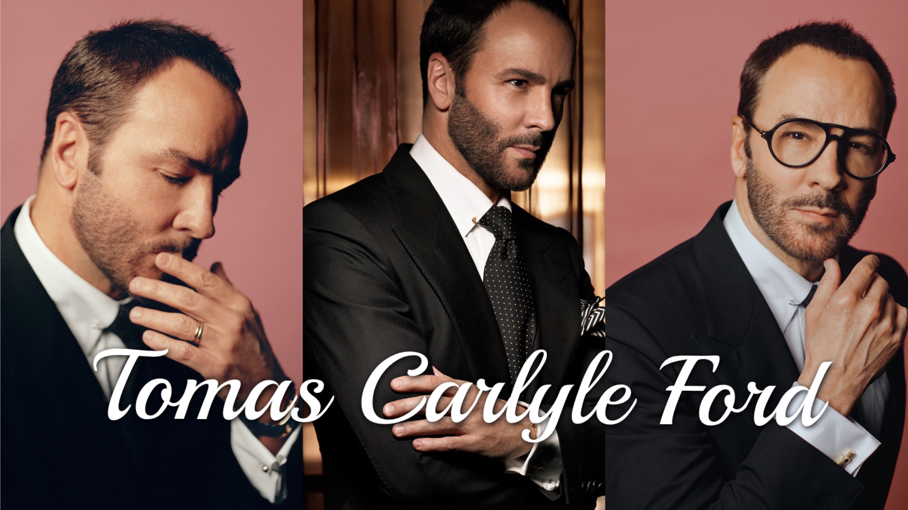

an American fashion designer and filmmaker
He launched his eponymous luxury brand in 2006, having previously served as the creative director at Gucci and Yves Saint Laurent.
Ford wrote and directed the Academy Award–nominated films A Single Man (2009) and Nocturnal Animals (2016).
He currently serves as the Chairman of the Board of the Council of Fashion Designers of America.